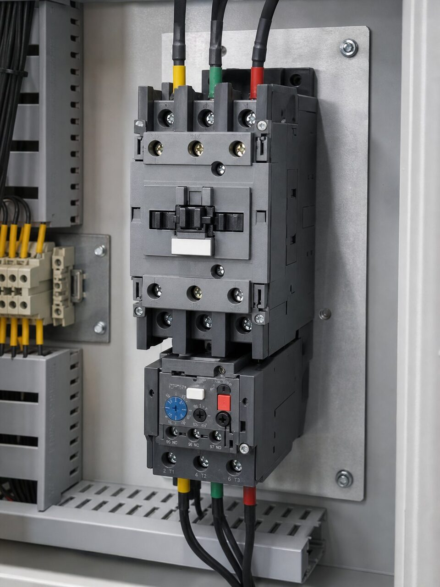

تقسیم وظایف در مدار موتور
در یک مدار فرمان موتور استاندارد، هر تجهیز وظیفه مشخصی دارد: کلید یا فیوز، حفاظت اتصال کوتاه را بر عهده دارد؛ کنتاکتور، قطع و وصل مکرر زیر بار را انجام میدهد و رله حرارتی، در برابر اضافه بار محافظت میکند. این تقسیم وظایف تصادفی نیست؛ هر یک از این تجهیزات برای یک نوع رفتار الکتریکی بهینه شدهاند و ترکیب آنها پوشش کاملی ایجاد میکند. حذف یا جایگزینی نادرست هر جزء، شکافی در حفاظت ایجاد مینماید که خود را به صورت سوختن موتور یا آسیب تجهیزات نشان میدهد.

کنتاکتور؛ انتخاب بر اساس بار
انتخاب کنتاکتور با دو پارامتر اصلی انجام میشود: جریان نامی بار و دسته بهرهبرداری. دسته بهرهبرداری، شدت وظیفه قطع و وصل را مشخص میکند؛ راهاندازی موتور قفس سنجابی با بار عادی یک دسته است و موتور با اینرسی بالا یا راهاندازیهای پرتکرار، دسته سنگینتری میطلبد. بوبین نیز باید با ولتاژ مدار فرمان هماهنگ باشد. در کاربردهای با سیکل کاری بالا، کنتاکتورهای با عمر مکانیکی و الکتریکی بالاتر انتخاب میشوند تا فاصله تعویض منطقی باشد.
بیمتان؛ تنظیم و هماهنگی
رله حرارتی باید بر اساس جریان نامی موتور تنظیم شود؛ نه جریان کنتاکتور و نه جریان راهاندازی. رنج تنظیم بیمتان باید جریان نامی موتور را پوشش دهد و کلاس راهاندازی آن با زمان راهاندازی موتور هماهنگ باشد؛ در موتورهای با زمان راهاندازی طولانی، کلاسهای کندتر لازم است تا در استارت، قطع بیمورد رخ ندهد. در بسیاری طرحها، بیمتان زیر کنتاکتور نصب شده و با دکمه تست و ریست، امکان بررسی دورهای را فراهم میکند. توجه داشته باشید که بیمتان در برابر اتصال کوتاه محافظت نمیکند و حفاظت اتصال کوتاه وظیفه فیوز یا کلید است.
نکات عملی و خرید
در ست کردن کنتاکتور و بیمتان، هماهنگی مکانیکی و الکتریکی دو تجهیز اهمیت دارد؛ بسیاری سازندگان ستهای هماهنگ را به صورت آماده عرضه میکنند. در استعلام، جریان و توان موتور، ولتاژ بوبین، دسته بهرهبرداری و شرایط محیطی را ذکر کنید. در محیطهای با گرد و غبار یا رطوبت، محفظه مناسب و درجه حفاظت باید لحاظ گردد. بازرسی دورهای کنتاکتها از نظر خالزدگی و کنترل تنظیم بیمتان نیز در برنامه نگهداری قرار گیرد؛ بسیاری سوختن موتور، ریشه در تنظیم نادرست یا کنتاکت فرسوده دارند.
جمعبندی
کنتاکتور و بیمتان، دو بال کنترل و حفاظت موتور هستند: یکی قطع و وصل مکرر را انجام میدهد و دیگری در اضافه بار از سیمپیچ محافظت مینماید. با انتخاب متناسب دسته بار، تنظیم دقیق بیمتان بر اساس جریان موتور و استفاده از ستهای هماهنگ، مدار فرمانی قابل اتکا ساخته میشود که سالها بدون مشکل کار میکند.
سوالات رایج
کنتاکتور چیست؟
کلید الکترومکانیکی که با تحریک بوبین، کنتاکتهای قدرت را وصل یا قطع میکند و برای قطع و وصل مکرر موتور و بارهای دیگر طراحی شده است. کنتاکتور حفاظت نمیکند؛ فقط قطع و وصل مینماید.
رله حرارتی بیمتان چه وظیفهای دارد؟
جریان موتور را پایش میکند و در اضافه بار، پس از تاخیری متناسب با شدت اضافه بار، مدار را قطع مینماید. بیمتان از سیمپیچ موتور در برابر داغ شدن ناشی از اضافه بار محافظت میکند.
چرا کنتاکتور به تنهایی کافی نیست؟
چون کنتاکتور برای حفاظت طراحی نشده و در اضافه بار یا اتصال کوتاه، موتور را قطع نمیکند. برای حفاظت کامل، بیمتان برای اضافه بار و فیوز یا کلید برای اتصال کوتاه لازم است.
دسته بهرهبرداری چیست؟
طبقهبندی استاندارد که نوع بار و شرایط قطع و وصل را مشخص میکند؛ برای موتورهای قفس سنجابی رایجترین دسته استفاده میشود. انتخاب کنتاکتور باید متناسب دسته بار انجام شود.
مطالب مرتبط
با ذکر جریان موتور و دسته بهرهبرداری، کنتاکتور و رله حرارتی از برندهای معتبر عرضه میشود.
مشاهده صفحه محصول ← ثبت RFQ همین محصولتامین این تجهیزات را به پیشرو تجهیز فرتاک بسپارید
شرکت پیشرو تجهیز فرتاک تامینکننده تخصصی تجهیزات صنعتی برای پروژههای نفت، گاز، پتروشیمی، فولاد و نیروگاهی است. برای دریافت پیشنهاد فنی و قیمت، استعلام (RFQ) خود را ثبت کنید تا کارشناسان مهندسی فروش در کوتاهترین زمان پاسخ دهند.
- تامین برق صنعتیتجهیزات تابلو و حفاظتی
- تامین تجهیزات صنایع نفت و گازپکیج مواد مطابق وندورلیست